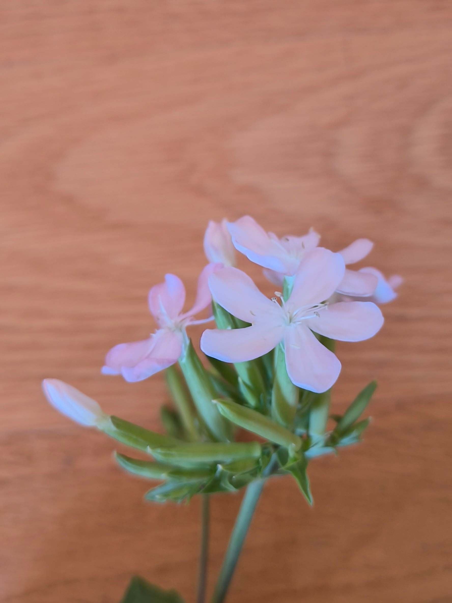
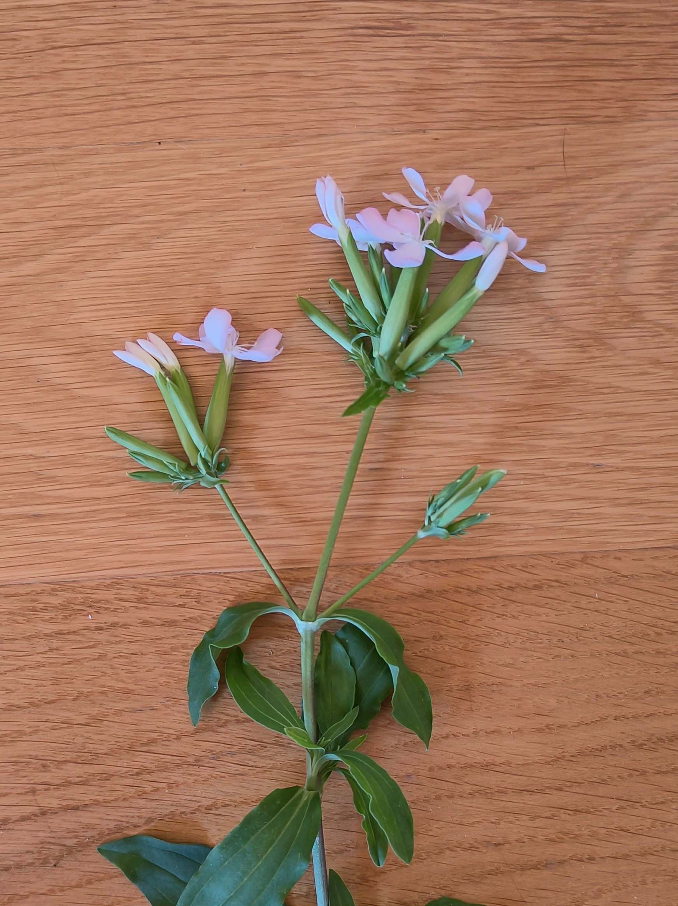

Caryophyllaceae
Saponaria officinalis
Possède une coronule formée de deux petites "pointes" à la base de chaque pétale.


Possède une coronule formée de deux petites "pointes" à la base de chaque pétale.

